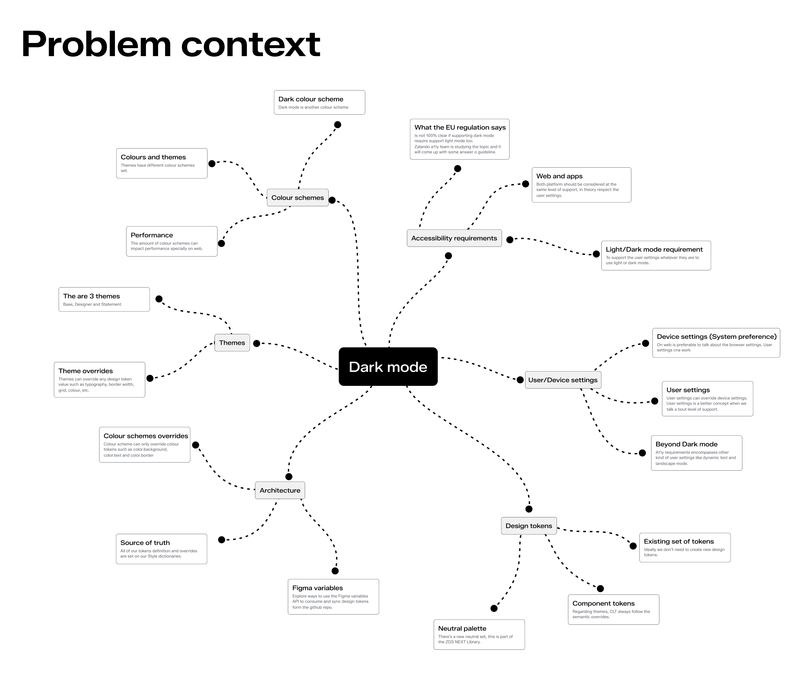
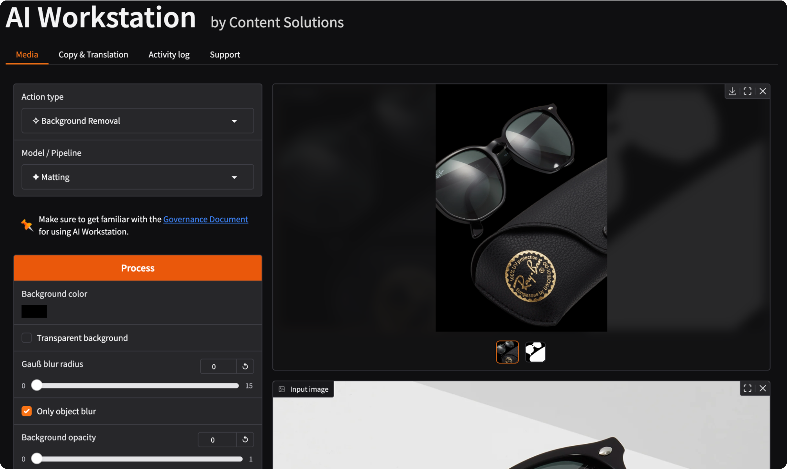
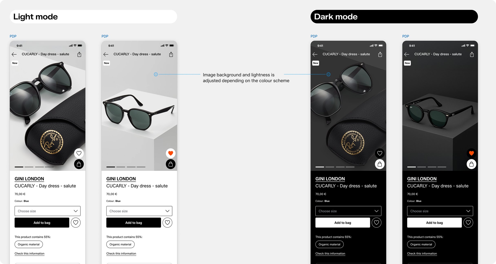
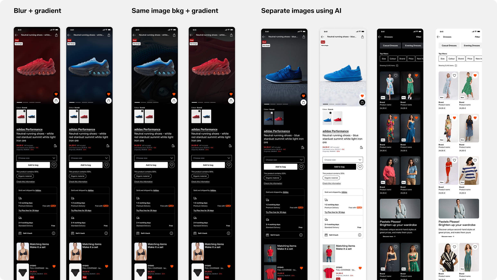
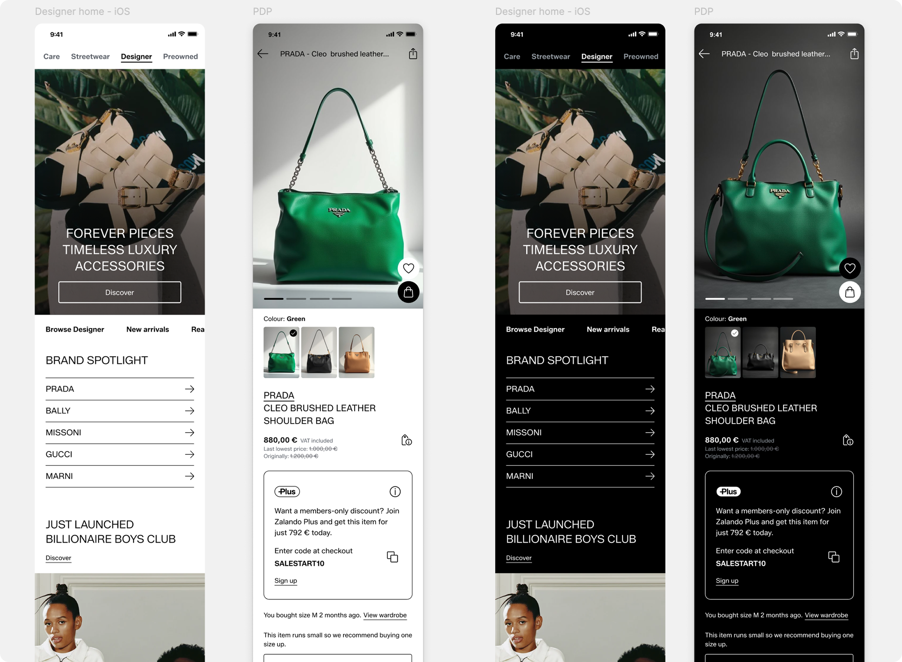
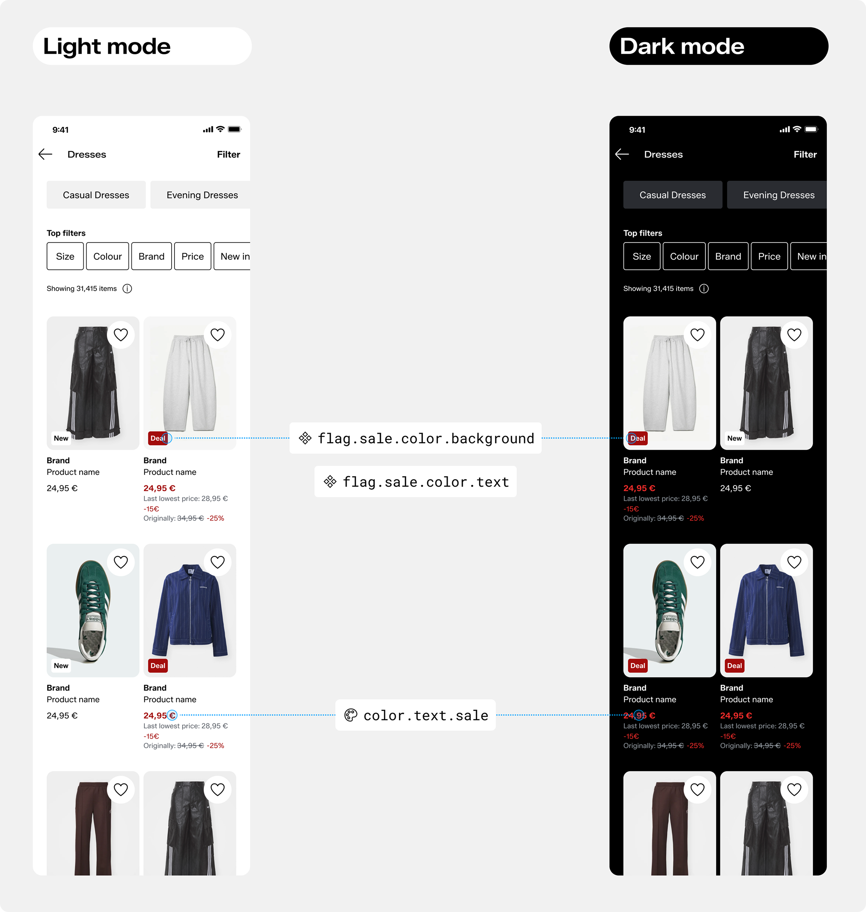
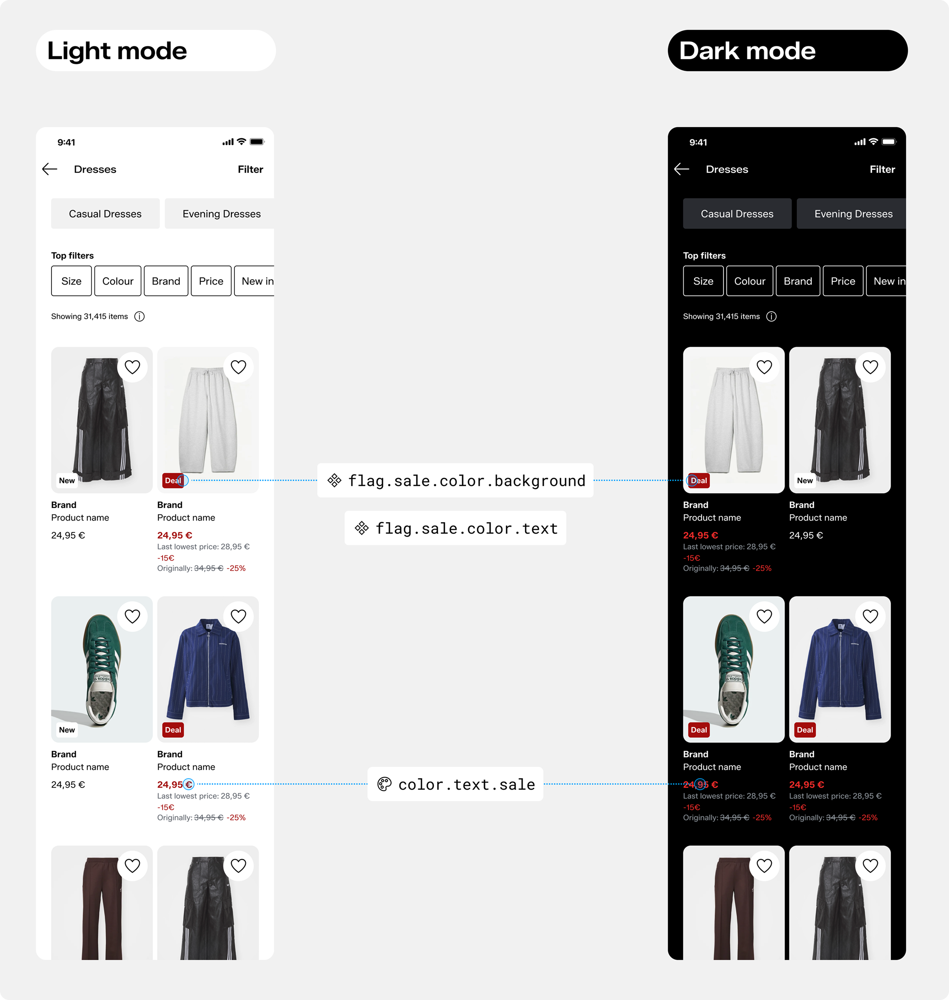
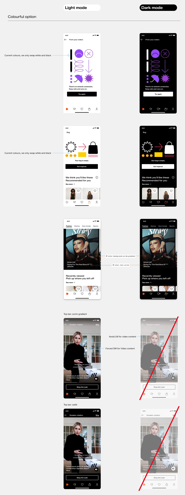

Immersive dark mode & accessibility
The official Zalando dark mode for each theme and how I setup 200% size mode in Figma
I drove the Dark mode exploration and implementation to ensure a11y compliance while giving teams tools to force dark and immersive experiences for each theme. I also led Figma setup to allow 200% resize on mocks using variables.
The challenge
No official support for Dark mode
The European Accessibility Act (EAA), which takes effect in 2025, mandates that certain digital products and services offered in the EU meet accessibility standards. This includes providing a dark mode option for users.
Besides this, applying dark mode involves way more than just adapting or swapping colours. It’s about colour schemes, yes, but also about our themes architecture, the user device settings and freedom to choose. The design and component tokens already available and how some themes will be experienced by default, like video and different media.
My role, achievements and outcomes
While the legislation does not yet clearly define the exact requirements for dark mode—or whether an equivalent light mode experience is also mandatory—Zalando’s accessibility team and I reviewed the guidance and agreed on the following principles
- Respect user preferences: When a user has dark mode enabled at the system level, all Zalando content must be compatible with and visually accessible in a dark interface.
- Light mode is not mandatory: Unlike dark mode, light mode does not require the same level of enforcement. This gives us the flexibility to design certain content, such as media, videos, or immersive UI elements, to always appear in dark mode. This approach is particularly suitable for experiences like video streaming or Zalando Stories, where a dark environment can enhance user engagement.
Dark mode themes
3
Each theme has its own dark mode.
Illustrations updated
200+
I trained people on 5 separate teams about how to create documentation.
My work as design prime consisted in:
- Explore colour tokens overrides
- Explore future vision of product images setup for dark mode
- Designed how dark and light mode colour schemes can be nested
- Setup new red sale to be a/b tested
- Document how dark mode works and how it can be used
- Created a script to update all illustrations to work on dark mode
- Designed guidelines about how gradients and fix dark areas are applied
Exploring a future vision for adaptive images
I used AI to explore how product images may look in dark mode. This exploration was aligned with the Content solutions team to push the boundaries of Zalando AI workstation pipeline to recreate images for dark mode.
Figma mocks using AI generated images using Chat-GPT, Adobe Firefly and Reve.
 Designer theme dark mode
Defining the red sale
I defined what would be the Red sale colour on dark mode, currently in A/B testing phase. This was done setting the whole colour shade scale starting from the existing red sale based on the Lightness and Saturation & Luminance of the red colour.
 

Illustrations and media
I created a script to go trough all the svg illustrations in our assets library and creating a dark mode version swapping the black shades to white. This work saved multiple hours of manual work changing the colours and exporting new assets. This was an interim solution since in the near future following the brand refresh project Zalando will remove coloured illustrations.
I also documented how scrim gradient would work to keep text on top of images and how dark mode will be used for video content.
Prev: Unified documentation
Next: Figma components, plugins and trainings
This website was manually built with love and plain html, css & js.
No AI was used in the process.
Thanks for reading.